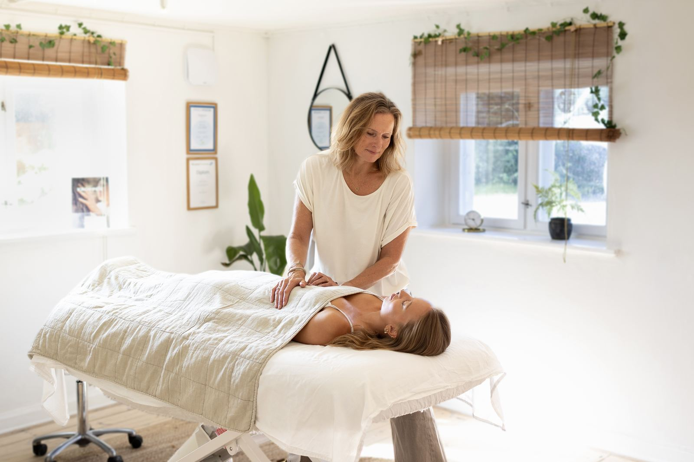
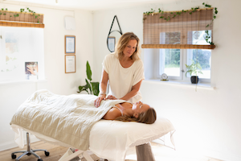

Manuvision-behandling & kropsterapi
Find hjem i din krop igen
Jeg møder Manuvision på et tidspunkt i mit liv, hvor jeg selv havde brug for at slippe gamle spændinger og finde ro. I dag hjælper jeg andre med at gøre det samme – gennem kropsterapi, der tager udgangspunkt i hele dig, både fysisk og mentalt.

Om mig
Jeg hedder Mette Thaisen, og jeg er uddannet og certificeret Manuvision-behandler. Med mange års erfaring og en dyb interesse for kroppen hjælper jeg dig med at finde tilbage til balancen mellem det fysiske og det mentale.
Læs mere om migMine ydelser
Jeg tilbyder flere former for kropsterapi, der kan tilpasses lige præcis dét, du har brug for.
Kropsterapi
Løsner fysiske spændinger i muskler og væv.
Manuvision-behandling
Arbejder med kroppens hukommelse og følelser.
Chok- og traumeterapi
Hjælper kroppen med at bearbejde chok.
Rådgivning & forløb
Et samlet forløb tilpasset dine behov.

Et forløb hos mig
Et forløb hos mig starter altid med en kort samtale. Hvad bringer dig hertil, hvad kan du mærke i kroppen, og hvad håber du at opnå? Jeg tilpasser altid behandlingen efter dine behov, og guider dig trygt gennem hele forløbet – fra den første konsultation til efterbehandling.
Se hele forløbetKlar til at tage det første skridt?
Book en tid i dag, og giv din krop og dit sind den ro, de fortjener.
Hvad skal der stå her?


"Jeg startede min kropsterapi-uddannelse i januar 2017, og siden har jeg samlet erfaring og hjulpet mange mennesker med at finde tilbage til sig selv." — Mette Thaisen